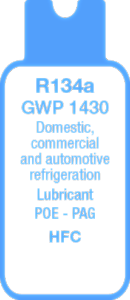
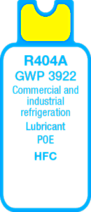
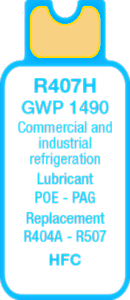
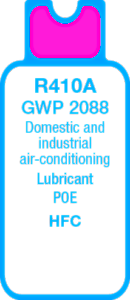
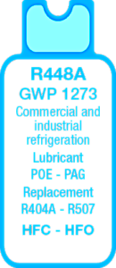
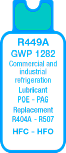

Since 2015 Vladmark S.R.O. has been specialized in the delivery of refrigerant gases.
Our products are sourced directly form the manufacturer, no need to worry about second hand quality.
All our products are fully certified within the EU.
|  |  |  |  |  |  |
| Freon R-134a, an alkyl halide, has been developed as a CFC substitute. It is used as a cooling fluid in the compression refrigeration cycles. It is considered as a low environmental impact refrigerant (HFC family). | From 2020 R404A will be banned from use in commercial refrigeration. Today there are substitutes such as R448A, R449A, R452A, R407H. | Mixture composed by R32, R125 and R134a gases, R407H refrigerant is considered as a possible alternative to the R22 gas, in fact it has similar efficiency and performances, even though it is not ozone resistant and has a GWP lower than R404A gas. | It is slowly disappearing to give way to R32 gas – as it has a GWP of 675, lower than R410A gas – although the two gases are not replaceable, because the R32 gas is flammable and requires a different system. | The R448A refrigerant is obtained by HFC and HFO mixture (in specific the gases R32, R125, R134a, R1234yf, R1234ze). It is a substitute of the R404A and R507 gases, and is used in industrial and commercial refrigeration. | Created as a substitute of the R404A and R507 gases, R449A refrigerant is a HFO and HFC mixture. Low and medium temperature commercial and industrial applications. |